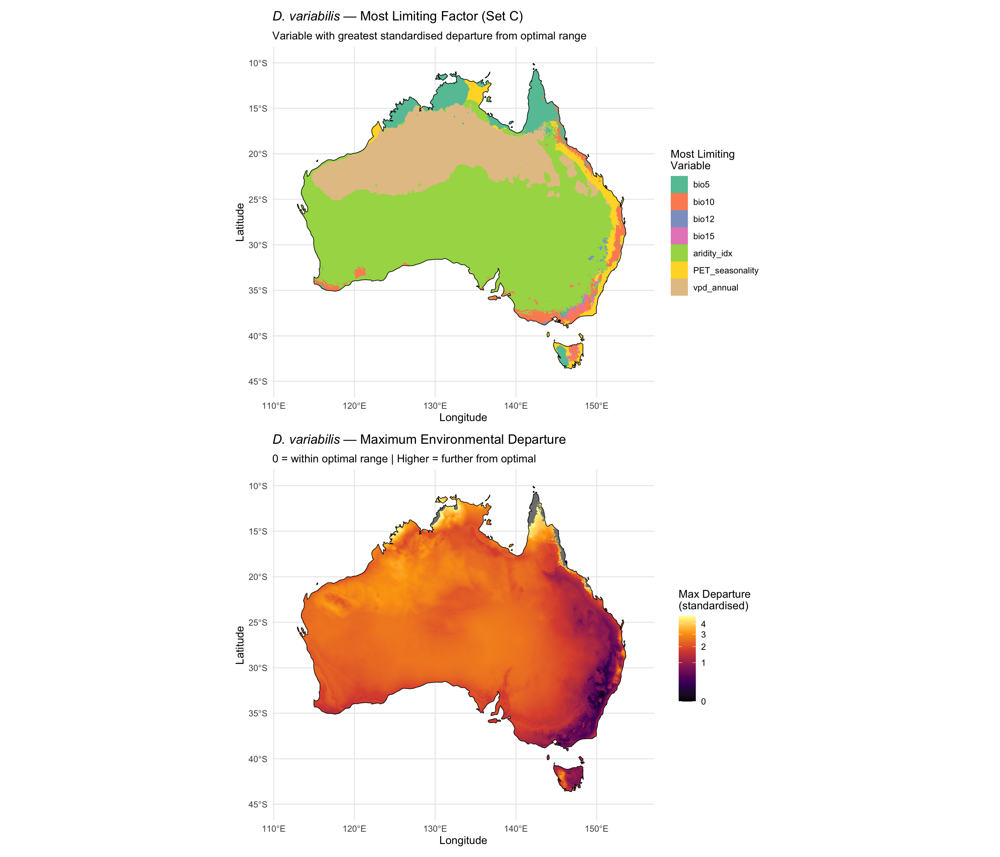

library(tidyverse)
library(terra)
library(sf)
library(rnaturalearth)
library(rnaturalearthdata)Step 10b: Limiting Factor Analysis
Dermacentor variabilis Species Distribution Model
Overview
For each cell in Australia, this script identifies the most limiting environmental variable — the variable whose value departs most from the species’ optimal range. This provides mechanistic insight consistent with the CLIMEX approach.
The 1990 Halliday & Sutherst CLIMEX study found that low summer humidity is the primary factor preventing D. variabilis establishment in inland/western Australia. If aridity_idx or PET_seasonality emerges as the dominant limiting factor in those regions, this independently validates the CLIMEX finding within our correlative SDM framework.
1. Load data
base_dir <- "~/Library/CloudStorage/OneDrive-CSIRO/OneDrive - Docs/01_Projects/SDM/Dvariabilis_SDM"
processed_dir <- file.path(base_dir, "processed_data")
figures_dir <- file.path(base_dir, "figures")
# Use Set C variables (moisture-focused) for ecologically meaningful assessment
set_C_file <- file.path(processed_dir, "selected_variables_setC.txt")
if (file.exists(set_C_file)) {
analysis_vars <- readLines(set_C_file)
} else {
analysis_vars <- c("bio5", "bio10", "bio12", "bio15",
"aridity_idx", "PET_seasonality", "vpd_annual")
}
# Also run with original Set A for comparison
set_A <- readLines(file.path(processed_dir, "selected_variables.txt"))
# Environmental stack
env_stack_aus <- rast(file.path(processed_dir, "env_stack_aus.tif"))
# Occurrence data
occ_env <- readRDS(file.path(processed_dir, "occurrences_with_env.rds"))
aus <- ne_countries(country = "Australia", scale = "medium", returnclass = "sf")
cat("Set A variables:", paste(set_A, collapse = ", "), "\n")
cat("Set C variables:", paste(analysis_vars, collapse = ", "), "\n")Set A variables: aridity_idx, bio1, bio12, bio15, bio7
Set C variables: bio5, bio10, bio12, bio15, aridity_idx, PET_seasonality, vpd_annual 2. Define optimal ranges from occurrence data
compute_optimal <- function(occ_data, vars) {
optimal <- tibble()
for (v in vars) {
vals <- occ_data[[v]]
optimal <- bind_rows(optimal, tibble(
variable = v,
q10 = quantile(vals, 0.10, na.rm = TRUE),
q50 = quantile(vals, 0.50, na.rm = TRUE),
q90 = quantile(vals, 0.90, na.rm = TRUE),
range = as.numeric(quantile(vals, 0.90, na.rm = TRUE) - quantile(vals, 0.10, na.rm = TRUE))
))
}
optimal
}
optimal_A <- compute_optimal(occ_env, set_A)
optimal_C <- compute_optimal(occ_env, analysis_vars)
cat("Optimal ranges (10th-90th percentile of occurrences) — Set C:\n")
print(optimal_C, n = Inf)Optimal ranges (10th-90th percentile of occurrences) — Set C:
# A tibble: 7 × 5
variable q10 q50 q90 range
<chr> <dbl> <dbl> <dbl> <dbl>
1 bio5 92 111 141 49
2 bio10 231 293 336 105
3 bio12 9.99 11.8 13.1 3.15
4 bio15 25.2 28.7 32.6 7.39
5 aridity_idx 22.8 30.9 41.6 18.7
6 PET_seasonality 4930. 5510. 5973. 1043.
7 vpd_annual 445. 613. 862. 417. 3. Compute limiting factor maps
For each cell, compute the standardised departure from the optimal range for each variable. The variable with the greatest departure is the most limiting factor.
Departure is standardised by the species’ tolerance breadth (range of 10th-90th percentile) so that variables measured in different units are comparable.
compute_limiting <- function(env_stack, vars, optimal, set_name) {
cat(sprintf("Computing limiting factors for %s...\n", set_name))
# Compute standardised departure for each variable
departure_layers <- list()
for (v in vars) {
opt <- optimal %>% filter(variable == v)
layer <- env_stack[[v]]
# Departure: 0 if within optimal range, positive if outside
# Standardised by tolerance breadth
dep <- app(layer, function(x) {
vapply(x, function(xi) {
if (is.na(xi)) return(NA_real_)
if (xi < opt$q10) return((opt$q10 - xi) / opt$range)
if (xi > opt$q90) return((xi - opt$q90) / opt$range)
return(0)
}, numeric(1))
})
departure_layers[[v]] <- dep
}
dep_stack <- rast(departure_layers)
names(dep_stack) <- vars
# Most limiting = variable with maximum departure
max_dep <- max(dep_stack)
limiting_var <- which.max(dep_stack)
# Total departure (sum of all variable departures)
total_dep <- sum(dep_stack)
# Count of variables outside optimal range
n_outside <- sum(dep_stack > 0)
list(
departure_stack = dep_stack,
max_departure = max_dep,
limiting_var = limiting_var,
total_departure = total_dep,
n_outside = n_outside
)
}
lim_A <- compute_limiting(env_stack_aus, set_A, optimal_A, "Set A")
lim_C <- compute_limiting(env_stack_aus, analysis_vars, optimal_C, "Set C")Computing limiting factors for Set A...
Computing limiting factors for Set C...4. Limiting factor maps
# Set C limiting factor map
lim_df_C <- as.data.frame(lim_C$limiting_var, xy = TRUE, na.rm = TRUE)
names(lim_df_C)[3] <- "lim_idx"
lim_df_C$variable <- analysis_vars[lim_df_C$lim_idx]
lim_df_C$variable <- factor(lim_df_C$variable, levels = analysis_vars)
dep_df_C <- as.data.frame(lim_C$max_departure, xy = TRUE, na.rm = TRUE)
names(dep_df_C)[3] <- "max_dep"
# Limiting factor dominance counts
lim_counts_C <- lim_df_C %>%
count(variable) %>%
mutate(pct = round(100 * n / sum(n), 1)) %>%
arrange(desc(pct))
cat("Set C — Most limiting variable dominance:\n")
print(as_tibble(lim_counts_C), n = Inf)
# Map 1: Most limiting variable
p1 <- ggplot() +
geom_raster(data = lim_df_C, aes(x = x, y = y, fill = variable)) +
geom_sf(data = aus, fill = NA, colour = "black", linewidth = 0.3) +
scale_fill_brewer(palette = "Set2", name = "Most Limiting\nVariable") +
labs(
title = expression(italic("D. variabilis") ~ "— Most Limiting Factor (Set C)"),
subtitle = "Variable with greatest standardised departure from optimal range",
x = "Longitude", y = "Latitude"
) +
theme_minimal(base_size = 11) +
coord_sf(xlim = c(112, 155), ylim = c(-45, -10))
# Map 2: Maximum departure magnitude
p2 <- ggplot() +
geom_raster(data = dep_df_C, aes(x = x, y = y, fill = max_dep)) +
geom_sf(data = aus, fill = NA, colour = "black", linewidth = 0.3) +
scale_fill_viridis_c(
name = "Max Departure\n(standardised)",
option = "inferno",
trans = "sqrt",
limits = c(0, quantile(dep_df_C$max_dep, 0.99, na.rm = TRUE))
) +
labs(
title = expression(italic("D. variabilis") ~ "— Maximum Environmental Departure"),
subtitle = "0 = within optimal range | Higher = further from optimal",
x = "Longitude", y = "Latitude"
) +
theme_minimal(base_size = 11) +
coord_sf(xlim = c(112, 155), ylim = c(-45, -10))
library(patchwork)
p_combined <- p1 / p2
print(p_combined)
ggsave(file.path(figures_dir, "10b_limiting_factors.png"),
p_combined, width = 10, height = 12, dpi = 300)Set C — Most limiting variable dominance:
# A tibble: 7 × 3
variable n pct
<fct> <int> <dbl>
1 aridity_idx 238469 59
2 vpd_annual 105721 26.2
3 bio5 25103 6.2
4 PET_seasonality 18017 4.5
5 bio10 14824 3.7
6 bio15 1368 0.3
7 bio12 762 0.25. Set A comparison
lim_df_A <- as.data.frame(lim_A$limiting_var, xy = TRUE, na.rm = TRUE)
names(lim_df_A)[3] <- "lim_idx"
lim_df_A$variable <- set_A[lim_df_A$lim_idx]
lim_counts_A <- lim_df_A %>%
count(variable) %>%
mutate(pct = round(100 * n / sum(n), 1)) %>%
arrange(desc(pct))
cat("\nSet A — Most limiting variable dominance:\n")
print(as_tibble(lim_counts_A), n = Inf)
cat("\nComparison:\n")
cat("If Bio1 or Bio7 dominates Set A but moisture variables dominate Set C,\n")
cat("this confirms that cold-tolerance variables artificially constrain the\n")
cat("SDM projections in regions where they are ecologically irrelevant.\n")
Set A — Most limiting variable dominance:
# A tibble: 5 × 3
variable n pct
<chr> <int> <dbl>
1 aridity_idx 376699 93.4
2 bio7 9087 2.3
3 bio1 7196 1.8
4 bio15 6013 1.5
5 bio12 4356 1.1
Comparison:
If Bio1 or Bio7 dominates Set A but moisture variables dominate Set C,
this confirms that cold-tolerance variables artificially constrain the
SDM projections in regions where they are ecologically irrelevant.6. Cells within optimal range for all variables
# Cells where ALL variables are within optimal range (departure = 0 for all)
fully_suitable_C <- lim_C$n_outside == 0
cell_areas <- cellSize(fully_suitable_C, unit = "km")
fully_suitable_area <- sum(values(cell_areas * fully_suitable_C), na.rm = TRUE)
total_area <- sum(values(cell_areas * !is.na(fully_suitable_C)), na.rm = TRUE)
sprintf("Cells within optimal range for ALL Set C variables: %.0f km2 (%.1f%%)",
fully_suitable_area, 100 * fully_suitable_area / total_area)
# Cells within optimal range for most variables (n_outside <= 1)
mostly_suitable <- lim_C$n_outside <= 1
mostly_suitable_area <- sum(values(cell_areas * mostly_suitable), na.rm = TRUE)
sprintf("Cells with at most 1 variable outside optimal: %.0f km2 (%.1f%%)",
mostly_suitable_area, 100 * mostly_suitable_area / total_area)[1] "Cells within optimal range for ALL Set C variables: 3143 km2 (0.0%)"
[1] "Cells with at most 1 variable outside optimal: 33324 km2 (0.4%)"7. Summary
cat("======================================================\n")
cat(" LIMITING FACTOR ANALYSIS SUMMARY\n")
cat("======================================================\n\n")
cat("Method: Standardised departure from species' optimal range (10-90th pctl)\n")
cat(sprintf("Variables: %s\n\n", paste(analysis_vars, collapse = ", ")))
cat("Most limiting variables (Set C, % of Australia):\n")
print(as_tibble(lim_counts_C), n = Inf)
moisture_vars <- c("aridity_idx", "PET_seasonality", "vpd_annual", "bio12", "bio15")
moisture_pct <- lim_counts_C %>%
filter(variable %in% moisture_vars) %>%
summarise(total_pct = sum(pct)) %>%
pull(total_pct)
temp_vars <- c("bio5", "bio10")
temp_pct <- lim_counts_C %>%
filter(variable %in% temp_vars) %>%
summarise(total_pct = sum(pct)) %>%
pull(total_pct)
cat(sprintf("\nMoisture-related variables dominate: %.1f%% of cells\n", moisture_pct))
cat(sprintf("Temperature-related variables dominate: %.1f%% of cells\n", temp_pct))
if (moisture_pct > temp_pct) {
cat("\nFINDING: Moisture is the PRIMARY limiting factor across Australia.\n")
cat("This is CONSISTENT with Halliday & Sutherst (1990) CLIMEX findings.\n")
}
# Save
write_csv(lim_counts_C, file.path(processed_dir, "limiting_factor_counts.csv"))
writeRaster(lim_C$limiting_var,
file.path(processed_dir, "limiting_factor_map_setC.tif"),
overwrite = TRUE)
sprintf("Saved limiting factor analysis outputs")======================================================
LIMITING FACTOR ANALYSIS SUMMARY
======================================================
Method: Standardised departure from species' optimal range (10-90th pctl)
Variables: bio5, bio10, bio12, bio15, aridity_idx, PET_seasonality, vpd_annual
Most limiting variables (Set C, % of Australia):
# A tibble: 7 × 3
variable n pct
<fct> <int> <dbl>
1 aridity_idx 238469 59
2 vpd_annual 105721 26.2
3 bio5 25103 6.2
4 PET_seasonality 18017 4.5
5 bio10 14824 3.7
6 bio15 1368 0.3
7 bio12 762 0.2
Moisture-related variables dominate: 90.2% of cells
Temperature-related variables dominate: 9.9% of cells
FINDING: Moisture is the PRIMARY limiting factor across Australia.
This is CONSISTENT with Halliday & Sutherst (1990) CLIMEX findings.
[1] "Saved limiting factor analysis outputs"